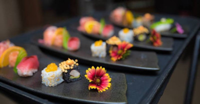
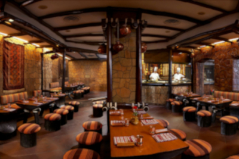
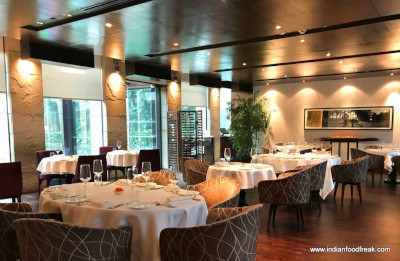
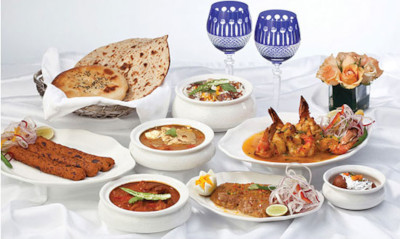
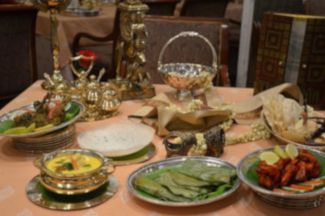
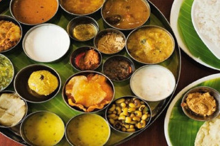
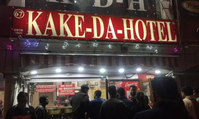
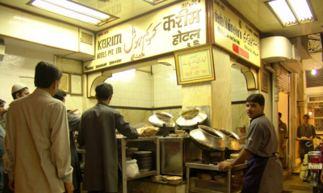
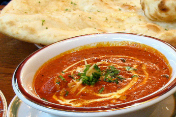

Restaurants
1. Pa Pa Ya, Saket

Pa Pa Ya certainly sets itself apart in terms of decor, food, drinks and service. It really is the whole package. The seventy-foot high domed ceiling, beautiful elevated bar, lively vibe and quality ingredients make it one of our favourite Asian restaurants in Delhi. Pa Pa Ya breaks stereotypes by presenting popular Oriental dishes in a totally new avatar with a touch of molecular gastronomy.
2. Artusi, GK 2
What’s in the name? Everything. Named after the author of the Italian cookbook, The Science in the Kitchen and The Art of Eating Well, the essence of Artusi Ristorante E Bar lies in its the name. Artusi pays attention to tiny details that most restaurants ignore: From starched white tablecloths to the Italian wine list. The restaurant doesn’t have over the top decor, rather the entire energy is poured in serving its patrons superior quality, authentic Italian food.
3. Bukhara, ITC Maurya

Established in the year 1978, Bukhara at ITC Maurya is recognized as the best Indian restaurant worldwide. The restaurant greets you with an old world, rustic charm and the aroma of the famous Dal Bukhara which has been cooking on slow fire since last night (almost 18 hours!). The restaurant lays emphasis on traditional Indian culinary ways. The menu that hasn’t been changed for years is presented on a wooden board and every dish it features is a masterpiece. The tikkas and kebabs are skillfully marinated in the finest of spices and then carefully char-grilled to perfection.
4. Indian Accent, The Lodhi

Indian Accent has been securing one of the top spots on San Pellegrino’s list of Asia’s top 50 restaurants for many years. They present the simplest of Indian ingredients with a cosmopolitan swag. Duck Khurchan is presented in a cornetto-like cone with chilli chutney, crisp tandoori naans are stuffed with blue cheese and pulled pork is stuffed into tacos made with phulkas. With Celebrity Chef Manish Mehrotra’s skill, you just don’t come here for a meal but to experience something new and unique each time.
5. Dum Pukht, ITC Maurya

One of the premier North Indian restaurants in Delhi, Dum Pukht opened its doorway back in 1988 and has been offering the same taste and flavours that linger long after as a beautiful memory. Dum Pukht has been known for reviving India’s royal culinary traditions: From the courts of Awadh to Kashmir. They use the ancient method of dum-style of cooking. ‘Dum’ means to breathe in and ‘Pukht’ means to cook. This method of slow cooking renders a tender texture and a deep flavour to the meats.
6. Dakshin, ITC Sheraton

The original Dakshin opened at ITC Grand Chola in the mid-1990s. The restaurant serves fantastic South Indian food with outstanding Kerala-style seafood dishes and mutton curries. The dishes on the menu from Tamil Nadu is what they specialise in. If you’d like to try a little bit of everything, go for their thali with silver bowls full of South Indian delicacies. The food here is as authentic as it gets.
7. Saravana Bhawan, CP

Cast off your notion of Southern food being restricted to only idlis and dosas and visit Saravana Bhawan where the menu is overwhelmingly elaborate. It is ready at 8 A.M. every morning to serve you some feather-light appams and wholesome pongal for breakfast. You’ll often find people braving the queue outside this famous South Indian eatery. We love their Rava Dosa but it is their milky Mysore Pak that we go back for each time.
8. Kake Da Hotel, Connaught Place

Always busy and bustling with a constant stream of customers flowing in and checking out, this iconic restaurant-cum-dhaba in CP is know for it delectable desi food. Although, a bit chaotic, the restaurant is high on taste and serves staple North Indian dishes at affordable prices, without compromising on the taste and hygiene. Every dish is made with fresh ingredients and served in generous portions.
9. Karim’s, Jama Masjid

Karim’s has been serving delicious meat curries since 1913. Every day more than 2000 people from different parts of the city come here to indulge in their soft kebabs and rich mutton korma. Having maintained the same taste and quality over all these years, Karim’s is proudly known as one of the oldest and best Mughlai restaurants in Delhi.
10. Moti Mahal, Daryaganj

Moti Mahal has been credited with inventing the creamy Butter Chicken curry. It is believed that butter chicken was born when Chef Kundan Lal Gujral started preserving tandoori tikkas in a gravy made with tomatoes, butter and cream to retain its moist texture and this led to the creation of a dish that offers the best feeling of indulgence.